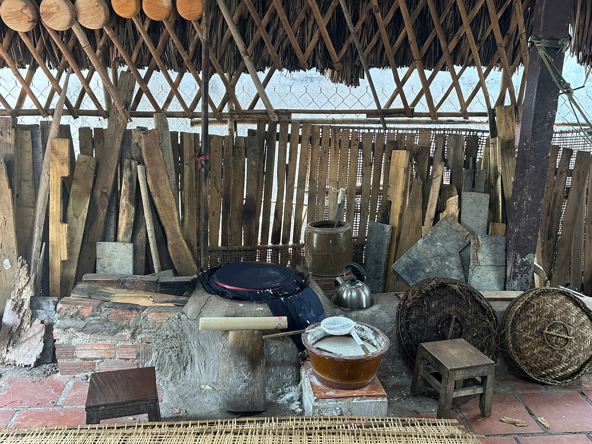
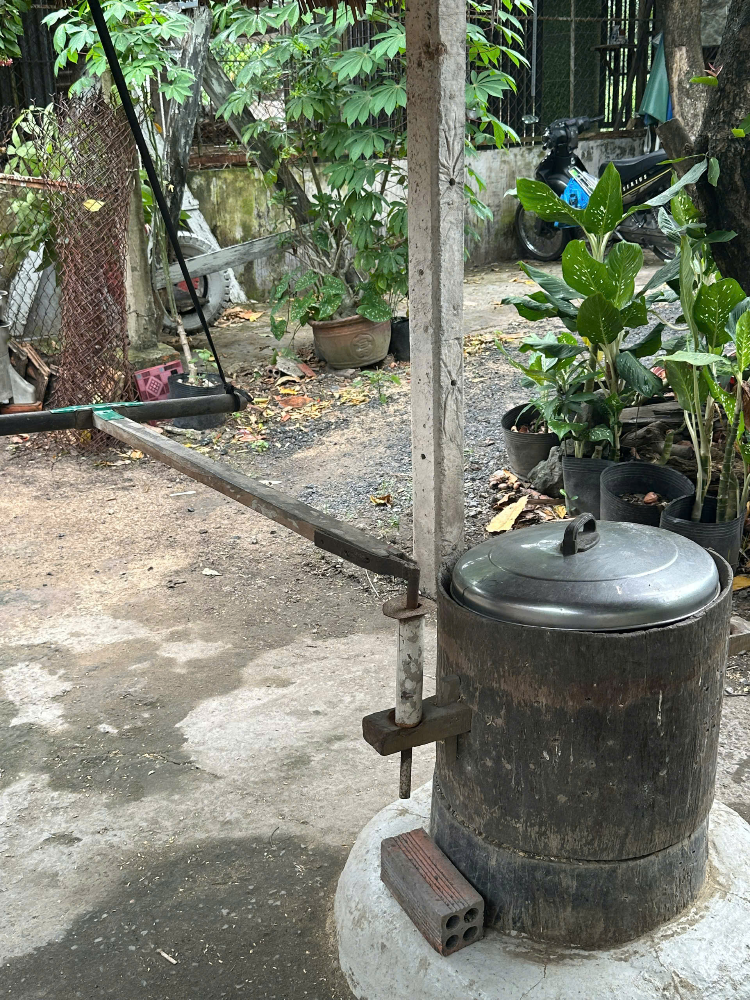
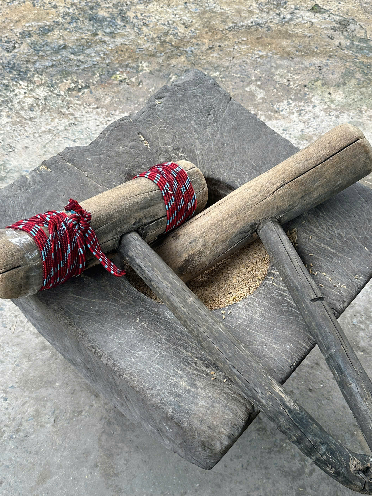
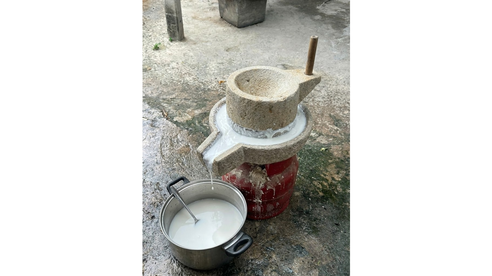

01
Gian bếp cổ
Không gian gợi nhớ đời sống của người làm bánh tráng xưa, nơi lưu giữ ký ức và văn hóa làng nghề.

Hơn một thế kỉ gìn giữ những giá trị văn hoá, làng nghề và ký ức của vùng đất ven sông Sài Gòn
Phú Hoà Đông không chỉ là nơi lưu giữ những nghề thủ công truyền thống, mà còn là nơi ghi dấu ký ức của nhiều thế hệ cư dân đã sinh sống và phát triển bên dòng sông.
Từ những mái nhà cổ, đình làng, những con đường nhỏ cho đến các xưởng nghề truyền thống, mỗi không gian đều kể lại một phần lịch sử của vùng đất.
Giá trị của Phú Hoà Đông không nằm ở những công trình đồ sộ mà nằm trong chính con người, tập quán sinh hoạt và tinh thần gìn giữ bản sắc qua nhiều thế hệ.

Những cột mốc quan trọng tạo nên bản sắc văn hóa của Phú Hoà Đông.
Nghề làm bánh tráng hình thành tại Phú Hòa Đông nhờ nguồn nước sông Sài Gòn và vùng nguyên liệu lúa gạo dồi dào.
Lần đầu tiên bánh tráng Phú Hòa Đông được xuất khẩu sang Pháp thông qua công ty quốc doanh
Trước nguy cơ mai một, UBND TP.HCM ban hành Quyết định 2988/QĐ-UBND phê duyệt Đề án khôi phục làng nghề bánh tráng Phú Hòa Đông.
UBND TPHCM ban hành Quyết định số 4568/QĐ-UBND về việc công nhận nghề truyền thống sản xuất bánh tráng tại xã Phú Hòa Đông.
Phát triển mô hình du lịch trải nghiệm, đưa du khách trở thành “Rice Runners”, trực tiếp khám phá và thực hành nghề bánh tráng, góp phần lan tỏa giá trị văn hóa làng nghề đến thế hệ mới.

Không gian gợi nhớ đời sống của người làm bánh tráng xưa, nơi lưu giữ ký ức và văn hóa làng nghề.

Dụng cụ tách vỏ trấu, mở đầu hành trình biến hạt lúa thành nguyên liệu làm bánh tráng.

Biểu tượng của lao động thủ công, tạo nên nguồn bột gạo truyền thống cho nghề bánh tráng.

Công cụ nghiền gạo thành bột mịn, góp phần tạo nên hương vị và chất lượng đặc trưng của bánh tráng Phú Hòa Đông.
"Di sản không chỉ là những gì được lưu giữ, mà còn là những giá trị được truyền lại cho thế hệ mai sau."— Nghệ nhân Phú Hòa Đông
Di sản chỉ thực sự tồn tại khi có những con người tiếp tục gìn giữ và truyền lại giá trị của nó.

Suốt hơn 30 năm, nghệ nhân Hồ Phú Châu vẫn đều đặn bắt đầu công việc từ khi mặt trời chưa mọc. Từng chiếc bánh được làm hoàn toàn thủ công với sự tỉ mỉ truyền từ đời này sang đời khác.
Với nghệ nhân, mỗi chiếc bánh tráng không chỉ là sản phẩm, mà còn là ký ức của cả một vùng quê.